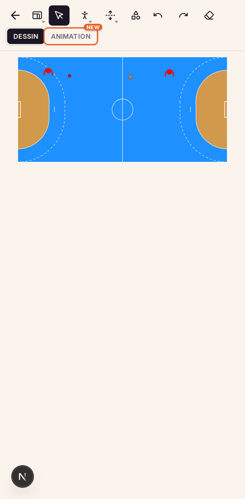
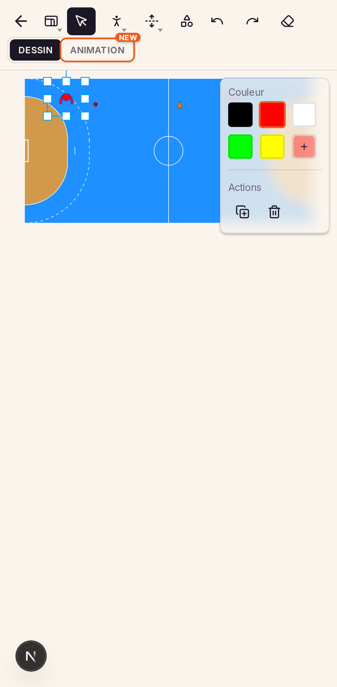
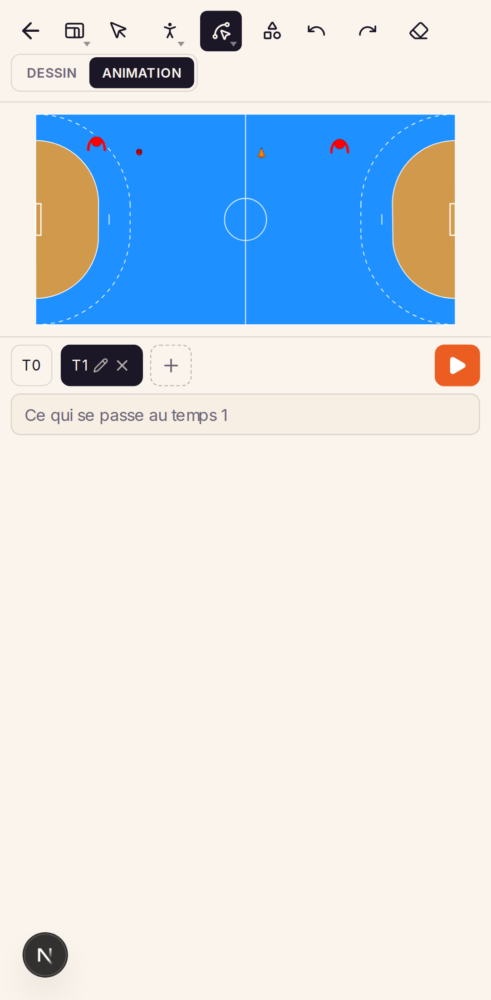

Sur téléphone, l'éditeur de schéma est aujourd'hui l'éditeur d'ordinateur, en plus petit. Le terrain occupe un cinquième de l'écran, les outils sont en haut, les cibles font 32 px, et rien ne se zoome. Cette étude part de l'existant, le mesure contre les repères du design mobile, puis propose trois directions — de la plus proche de l'existant à la plus ambitieuse.
Captures de l'application en septembre 2026, avec des données de test.



On garde « outil puis pose », on retourne l'écran. Terrain tourné en portrait, navigation en haut — Dessiner, Animer, et le nom de la pièce sélectionnée —, feuille « Plus » pour le reste, flèche tracée au glissé, pince pour zoomer, Enregistrer toujours visible. Quinze écrans : téléphone en portrait et paysage, tablette, ordinateur.
Voir les écrans → BPlus d'outil actif. Un plateau de jetons à glisser comme des aimants, un appui long pour poser sans quitter le terrain, une pilule d'actions à côté de l'élément. La couleur se choisit en prenant le jeton.
Voir les écrans → CLe temps 0 est le dessin. Plus de bascule Dessin / Animation : une bande de film avec une vignette par temps, un transport, et en paysage une table tactique plein écran qui sert aussi à la lecture.
Voir les écrans →| Critère | A · Terrain d'abord | B · Le geste avant l'outil | C · Storyboard |
|---|---|---|---|
| Ce qu'il faut réapprendre | Rien : mêmes outils, mieux placés | Le glissé depuis le plateau et l'appui long | La bande de film ; le reste vient de A |
| Poser un joueur rouge | 2 appuis (Joueur, terrain) | 1 glissé | Comme A |
| Tracer une flèche | Tracer, puis glissé | Pilule, puis glissé | Comme A |
| Poser dix plots | Rapide (outil actif) | Lent sans modèle | Comme A |
| Cohérence avec l'ordinateur | Totale : même barre haute, outils à gauche, pièce à droite, temps sous le terrain | À faire évoluer ensemble | Totale pour le dessin ; la bande de film vaut aussi sur ordinateur |
| Animation | Même modèle ; les onglets Dessiner · Animer remplacent la bascule | Inchangée | Repensée |
| Points techniques | Rotation et zoom de la scène Konva, onglets en haut, feuille basse, tracé au glissé, multi-sélection tactile | Glisser-déposer HTML → Konva, menu radial, pilule positionnée | A + vignettes rendues hors écran et mises en cache, écran paysage |
| Effort | M | L | L (M si A est déjà faite) |
Commencer par A. Elle corrige tout ce qui rend l'éditeur inexploitable au doigt (taille du terrain, zoom, cibles, panneau qui masque, flèche impossible à finir, multi-sélection absente) sans toucher au modèle mental ni à l'ordinateur, et chaque brique est indépendante : la rotation du terrain, les onglets Dessiner · Animer, l'onglet de la pièce et le tracé au glissé peuvent se livrer séparément.
Puis C, qui s'y empile. La bande de film règle le seul vrai problème de l'animation actuelle — on ne voit pas ce qu'il y a dans un temps — et l'écran paysage donne à la lecture la place qu'elle mérite au bord du terrain.
Garder B en réserve, ou n'en prendre que deux idées : les jetons pré-colorés dans le dock (Attaque, Défense, Gardien à la place d'un Joueur unique) et la pilule près de l'élément à la place de la barre basse, si les tests montrent que descendre le regard vers le bas de l'écran coûte trop.
Repères : références Mobile UX, Canvas navigation et Canvas objects du skill ux-designer ; mobile-app-design pour les tailles de cibles et la zone du pouce ; Material 3 (feuilles basses, dock) et les Human Interface Guidelines (44 pt, gestes de bord).